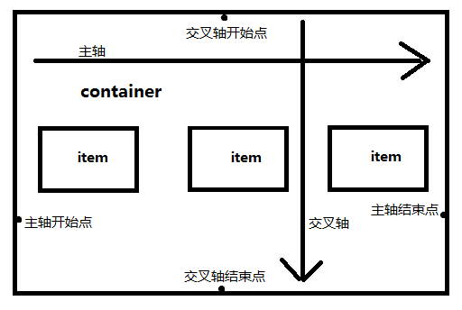

我们在编写网页代码时，首先应该做的就是设计好页面的布局形式，然后再往里面填充内容。网页布局的好与坏，直接决定了网页最终的展示效果。PC端常见的网页布局形式有两列布局、三列布局等。在CSS中，我们通常使用浮动(float)、定位(position)、显示模式(display)相关属性结合使用，以达到预期效果。
一 文档流
文档流就是HTML文档内所有元素按照一定规律排列并显示的形式。
CSS文档流大致可以分为3种：标准流，浮动流，定位流。
1，标准流
默认情况下，HTML元素都在标准流中呈现和展示。我们之前把元素分为块级元素，行内元素，行内块级元素，他们的特性是块级独占一行，行内和行内块级可以在一行内共存，这些特性都是针对标准流的。总结一下就是，标准流中元素只能在水平或垂直方向上排版。如果元素是块级元素, 那么就会垂直排版，如果元素是行内元素/行内块级元素, 那么就会水平排版。
2，浮动流
浮动流只有一种排版方式, 就是水平排版。 它只能设置某个元素在父元素内左对齐或者右对齐。设置了浮动的元素，将脱离标准流，之后它将无视元素的display属性，并且都被当做块级元素处理。
1 div{
2 float:left;/*规定元素向左浮动*/
3 /*float:right;规定元素向右浮动*/
4 }请注意，浮动float属性没有center取值，并且，如果设置了浮动属性，那么你将不能通过使用margin:0 auto；属性使元素居中。
3，定位流
标准流和浮动流都只能在水平或垂直方向布局元素，但现实是，我们可能需要在上下左右几个方向上同时偏移元素，定位流正是为了解决这一问题而设计的。通过设置元素的position属性，可以让元素处于定为流中，并通过left、right、top、bottom属性设置元素具体的偏移量。
定为流分为四种：
a) static 静态定位，实际上所有元素默认都是静态定位的，即处于标准流中。
b) relative 相对定位，元素保留在标准流中所占用的位置，但实际是边框及以内的部分将显示在偏移之后的位置。即虽然元素已经不再原来的位置了，但之前所占用的空间并不会被释放给其他标准流中的元素。
c) absolute 绝对定位，元素脱离标准流，浏览器把它视作块级元素，不论定位之前它是何种元素，其他元素也将无视它。绝对定位的偏移量是相对于其有定位属性的第一个祖先元素的。
d) fixed 固定定位，固定定位和绝对定位相似，但它的偏移量固定的相对于浏览器窗口。
二 浮动
当某个元素浮动之后，相当于从标准流中删除了该元素，标准流中的元素将会无视浮动元素，并且可能被浮动元素覆盖。
当有多个元素浮动时，他们有以下特点：
a) 在相同方向上浮动的元素，先浮动的元素会显示在前面。
1 .brother1{
2 float:left;
3 }
4 .brother2{
5 float:left;
6 }
7 /*brother1将显示在brother2的左边，如果都设置右浮动，那么brother1将显示在brother2的右边*/b) 不同方向的浮动元素，会尽量去寻找并贴靠前面和它浮动方向相同的元素。如果前面没有其他浮动元素，那么它将紧贴其父元素的边界。
1 .son1{
2 float:left;
3 }
4 .son2{
5 float:right;
6 }
7 .son3{
8 float:left;
9 }
10 /*son1和son3会在父元素的左侧显示，并且son3紧跟在son1的后面。son2则在父元素的右侧显示，紧贴父元素上*/c) 如果有未浮动的兄弟元素，那么元素在浮动之后，会根据它在标准流中的位置确定该在第几行展示。
1 .brother1{
2 background-color:red;
3 float:left;
4 }
5 .brother2{
6 background-color:blue;
7 }
8 .brother3{
9 background-color:yellow;
10 float:left;
11 }
12 /*最终效果是：brother1和brother2在第一行显示，但brother1盖住了brother2，brother3单独在第二行显示*/浮动元素还有一个特点：浮动元素不会挡住没有浮动元素中的文字, 没有浮动的文字会自动给浮动的元素让位置。这才是设计浮动的初衷。
元素浮动后会带来两个问题，第一个是造成父元素的高度塌陷，padding和margin无效。第二个是被其他元素无视，出现元素相互覆盖的现象。那么要怎样才能消除浮动对其他元素的影响呢？我们通过下面的方式清除浮动带来的影响。
a) 为父元素设置固定的高度（解决问题一）。
1 father{
2 heigth:100px;
3 }
4 son{
5 float:left;
6 }b) 为父元素设置浮动（解决问题一）。
1 father{
2 float:left;
3 }
4 son{
5 float:left;
6 }c) 设置clear属性。clear属性的功能是使浮动元素不去寻找相邻的其他浮动元素，从而消除浮动元素对其他元素的影响（解决问题二）。
1 father::after{
2 content:'';
3 display:block;
4 height:0;
5 clear:both;
6 }
7 /*俗称隔墙法，根据需要也可以设置在浮动元素自身或其父元素上*/
8 son{
9 float:left;
10 }d) 为父元素设置overflow:hidden;属性（解决问题二）。
1 father{
2 overflow:hidden;
3 }
4 /*原理是触发BFC机制*/
5 son{
6 float:left;
7 }
三 定位
1，相对定位
通过给元素设置position:relative;属性设置元素相对定位。
1 .box{
2 position:relative;
3 top:50px;
4 left:50px;
5 }
6 /*box元素将在原来的位置向下和向右偏移50px，请注意：在定位流中，同一个方向上的定位属性只能使用一次*/请注意在浏览器中的坐标系和一般坐标系并不相同。如果不清楚请看《CSS基础》第4.3节。
在相对定位中，实际上元素并未脱离标准流，所以浏览器还是会区分它是否是块级或其他类型的元素。另外，设置元素的margin属性，实际上margin区域会出现在元素定位之前的位置。
2，绝对定位
通过给元素设置position:absolute;属性设置元素绝对定位。
1 .box{
2 position:absolute;
3 top:50px;
4 left:50px;
5 }
6 /*box元素将相对于父元素的左顶点（坐标原点）向下向右偏移50px*/如果没有设置偏移量，默认top和left偏移量为0。如果元素所有祖先元素都没有定位属性，那么元素将相对body元素偏移。
在使用绝对定位时有两个注意点：第一个是如果网页宽高较大时（大于浏览器可视区宽高），并且元素最终相对于body定位了，实际上它只是相对浏览器首屏的宽高进行偏移，而不是整个网页的宽高。第二个是绝对定位的元素会自动忽略有定位属性的祖先元素的padding属性。
绝对定位一般和相对定位配合使用，父元素设置相对定位，但不设置偏移量（默认为0），子元素设置绝对定位，这样就可以把子元素的偏移控制在父元素之内。
1 .father{
2 position:relative;
3 }
4 .son{
5 position:absolute;
6 left:50px;
7 top:50px;
8 }
9 /*子元素相对父元素进行偏移，二父元素不受影响*/
3，固定定位
元素的固定定位和背景图片的关联性相似，可以控制元素是否随着滚动条滚动。
1 div{
2 position:fixed;
3 top:100px;
4 left:50px;
5 } 固定定位的元素相对于浏览器视口偏移，和绝对定位的元素一样，它会脱离标准文档流，并且浏览器把他们一致视作块级元素。
4，z-index属性
默认情况下，所有元素都有一个z-index属性，用于定义它们的覆盖关系。
1 div{
2 z-index:999;
3 }通常情况下，元素的z-index属性值都是0，并且定位流中的元素会覆盖标准流中的元素，同在定位流中的元素，写在后面的会覆盖写在前面的元素。
在定为流中，如果你想调整它们的覆盖关系，你可以设置它们的z-index属性，并且谁的值越大，显示优先级越高。
需要注意的是，如果定位元素的父元素也设置了z-index属性，那么子元素的z-index属性将失效，并且最终是根据父元素的z-index属性来判断覆盖关系。
四 居中与flex
1，水平居中
如果元素是文本、图片等行内元素，在父元素中设置text-align:center即可实现行内元素水平居中，如果子元素是不定宽块级元素，将子元素的display设置为inline-block，使子元素变成行内元素，可以实现块级元素的水平居中。
1 p{
2 text-align:center;
3 /*文本图片等水平居中*/
4 }
5 .father{
6 text-align:center;
7 }
8 .son{
9 display:inlin-block;
10 /*不定宽块级元素，修改显示模式，利用text-align属性使其居中*/
11 }如果子元素是定宽块级元素，又不想改变显示模式，那么可以通过设置margin属性实现水平居中。
1 div{
2 width:500px;
3 height:300px;
4 margin:0 auto;
5 /*auto，让浏览器决定*/
6 }
2，垂直居中
首先，如果父元素高度一定，子元素是文本或图片等高度由内容撑开的行内元素，可以使用line-height属性让其垂直居中。
1 .father{
2 height:100px;
3 }
4 .son{
5 font-size:20px;
6 line-height:100px;
7 }如果子元素是不定高度的块级元素，我们则可以通过给父元素设置display:table-cell；和vertical-align:middle；属性来解决。
1 .father{
2 height:100px;
3 display:table-cell;
4 vertical-align:middle;
5 }
6 .son{
7 display:block;
8 height:?;
9 }
10 /*这样实现垂直居中的原理是：使父元素以表格的形式呈现，再利用vertical-align属性在表格中是设置单元格内容垂直对齐方式的特性，从而达到块级元素垂直居中的效果。*/需要注意的是：设置了dispaly:table-cell属性后，元素将忽略margin值。并且，如果你还设置了绝对定位或浮动，该属性功能将被破坏。
如果子元素是定高的，那么你只需简单的使用margin属性，即可达到让元素垂直居中的目的。
1 .father{
2 height:200px;
3 }
4 .son{
5 height:100px;
6 margin-top:50px
7 }
3，水平垂直居中
通过上面的方式组合使用，即可达到元素水平垂直都居中的效果。
1 .father{
2 width:800px;
3 height:600px;
4 text-align:center;
5 }
6 .son{
7 width:600px;
8 heigth:400px;
9 margin:100px auto;
10 }或者使用绝对定位+相对定位。
1 .father{
2 width:600px;
3 height:800px;
4 position:relative;
5 }
6 .son{
7 width:400px;
8 height:600px;
9 position:absolute;
10 top:100px;
11 left:100px;
12 }
4，flex
flex即弹性布局，用来为盒状模型提供最大的灵活性。需要注意的是，元素使用flex布局后，float，clear和vertical-align属性将失效。flex是display(显示模式)属性的一个可选值，而不是position(定位)。
1 .box{
2 display:flex;
3 /*为块级元素设置弹性布局*/
4 }
5 .inline-box{
6 display:inline-flex;
7 /*为行内元素设置弹性布局*/
8 }设置了弹性布局的盒子我们称为弹性盒子（flex box），或者把它称作容器（container）。如果把一个弹性盒子看成一个完整的工程（project），那么我们可以把弹性盒子内部的元素看做是单个的模块项目（module item），这些模块都会遵守弹性盒子的规范，通过设置一些属性，自动的调整自身的大小以适应弹性盒子中可用空间的变化。
弹性盒子中默认有两根轴线，水平方向的主轴，垂直方向的纵轴（交叉轴）。轴线与盒子边框的交点是开始位置和结束位置。

容器属性：
1 .box{
2 display:flex;
3 flex-direction:row;
4 /*该属性决定主轴的方向，即项目排列的方向。row，默认值，横向从左至右；colum，纵向从上至下展示项；row-reverse和row方向相反，colum-reverse和colum方向相反*/
5 flex-wrap:nowrap;
6 /*该属性定义如果一条轴线排不下，如何换行。nowrap，默认值，不换行；wrap,换行*/
7 justify-content:flex-start;
8 /*该属性定义项目在主轴上的对齐方式。flex-start，默认值，开始对齐（例如上面设置了横向从左至右排列项目，则这里表示左对齐，如果上面设置row-reverse，则这里表示右对齐），该属性还有几个可选值：flex-end，结束对齐；center，居中对齐；space-between，两端对齐；space-around，项目间隔相等*/
9 align-items:stretch;
10 /*该属性定义项目在交叉轴上的对齐方式。stretch，默认值，如果项目没有具体高度，将占满整个容器；center，项目中线对齐；flex-start，开始对齐；flex-end，结束对齐；baseline，各项目的第一行文字基线对齐*/
11 }要想项目自动的调整自身的大小以适应弹性盒子中可用空间的变化，还需要依赖项目自身的一些属性。
1 .item{
2 order:1;
3 /*设置项目排列的先后顺序，数字越大越靠后，如果没收设置，则谁写在前面谁就排在前面。*/
4 flex-grow:1;
5 /*定义可以放大的比例，默认是0，表示不放大，1表示放大1倍，2表示放大2倍，以此类推。如果所有项目都设置成相同数字，那么容器的可用空间会被项目等分。*/
6 flex-shrink:1；
7 /*定义可以缩小的比例，默认是1，表示可以缩小1倍，2表示缩小2倍，以此类推。0表示不缩小。如果所有项目都设置成相同数字，那么容器的可用空间会被项目等分。*/
8 flex-basis:auto;
9 /*定义项目占用主轴的长度，可以是width或height属性一样的值。比如百分比，px，em等。两个特殊值：auto（默认的）表示占用盒子本来的大小；0则表示只占项目内容区域的大小（）*/
10 }缩放和尺寸可以使用缩写形式。
1 .item{
2 flex:1 1 auto;
3 /*分别表示flex-grow,flex-shrink,flex-basis*/
4 }采用缩写形式时需要注意，如果只有一个数字值，则代表flex-grow；如果只有一个宽度值（有单位的），则代表flex-basis；如果值有两个值，那么第一个必须是数字，代表flex-grow，第二个可以是数字或宽度，分表代表flex-shrink或flex-basis。
五 两列布局
左侧定宽右侧自适应宽度的两列布局常用方式有下面几种：
1，左边脱离标准流，右边使用margin属性使其偏移
1 .left{
2 width:200px;
3 float:left;
4 /*
5 position:absolute;
6 left:0;
7 */
8 }
9 .right{
10 margin-left:200px
11 }
2，calc()
1 .left{
2 width:200px;
3 display:inline-block;
4 }
5 .right{
6 display:inline-block;
7 width:calc(100% - 200px);
8 }
9 /*另一种形式是，左右均浮动，然后利用calc()动态计算右边的宽度*/
3，float+BFC
1 .left{
2 width:200px;
3 float:left;
4 }
5 .right{
6 overflow: auto;
7 }
8 /*左侧浮动，但是右侧盒子通过overflow: auto;形成BFC，使右侧盒子不会无视浮动的元素*/
4，flex
1 .wrap{
2 display:flex;
3 aligin:items:flex-start;
4 }
5 .left{
6 width:50px;
7 flex:0 0 auto;
8 }
9 .right{
10 flex:1 1 auto;
11 }
六 三列布局
一般的3列布局要求是：中间自适应宽度，左右两边定宽。满足这种要求的布局我们一般有两种方式，圣杯布局和双飞翼布局。
1，圣杯布局
HTML部分：
1 <div class='wrap'>
2 <div class="center">center</div>
3 <div class="left">left</div>
4 <div class="right">right</div>
5 </div>CSS部分：
1 .wrap{
2 width: 50%;
3 height:400px;
4 margin:50px auto;
5 position: relative;
6 }
7 .wrap .center{
8 width: 100%;
9 height:400px;
10 float: left;
11 }
12 .wrap .left{
13 width:100px;
14 height: 400px;
15 float: left;
16 margin-left: -100%;
17 position: relative;
18 left:-100px;
19 }
20 .wrap .right{
21 height: 400px;
22 width:100px;
23 float: right;
24 margin-left: -100%;
25 position: relative;
26 right:-100px;
27 }原理：左中右三块均设置浮动，center宽度100%，left和right通过设置负margin值， 使其和center处于同一行，然后利用相对定位让其分布于center的两边。
2，双飞翼布局
HTML部分：
1 <div class='wrap'>
2 <div class="center">
3 <div class="content"></div>
4 </div>
5 <div class="left">left</div>
6 <div class="right">right</div>
7 </div>CSS部分：
1 .wrap{
2 width: 50%;
3 height:400px;
4 margin:50px auto;
5 }
6 .wrap .center{
7 width: 100%;
8 height:300px;
9 float: left;
10 }
11 .wrap .center .content{
12 margin:0 100px;
13 }
14 .wrap .left{
15 width: 100px;
16 height:300px;
17 float: left;
18 margin-left: -100%;
19 }
20 .wrap .right{
21 width: 100px;
22 height:300px;
23 float: right;
24 margin-left: -100%;
25 }原理：左中右三块均设置浮动，center宽度100%，left和right通过设置负margin值，使其和center处于同一行，此时left和right实际上遮住了部分center，所以center中的content需要设置margin。
圣杯布局和双飞翼布局的区别：除了HTML代码结构不同外，圣杯布局的center宽度即为内容区宽度，left和right靠在其两边。双飞翼布局的center宽度等于内容区宽度加left和right宽度。因为它的left和right实际上占用（遮住）了center的空间，所以需要在center中新增一个.content的div，并设置它的margin，以便空出left和right的位置。
圣杯布局和双飞翼布局的好处是，center区域可以优先于左右两边被浏览器渲染。不过现代浏览器普遍性能良好，这点优先根本不易被用户察觉到。
3，calc()
通过calc()函数我们也可以轻松满足两边定宽，中间自适应的要求。
HTML部分：
1 <div class="wrap">
2 <div class="left">left</div>
3 <div class="right">left</div>
4 <div class="center">center</div>
5 </div>CSS部分：
1 .wrap{
2 width:80%;
3 margin: 0 auto;
4 background-color: #ccc;
5 /*position: relative;*/
6 }
7
8 .wrap .center{
9 background-color: blue;
10 margin-left:200px;
11 width:calc(100% - 400px);
12 }
13 .wrap .left{
14 background-color: red;
15 width:200px;
16 float:left;
17 /*position: absolute;
18 left: 0;
19 top:0;*/
20 }
21 .wrap .right{
22 background-color: yellow;
23 width:200px;
24 float:right;
25 /*position: absolute;
26 right: 0;
27 top:0;*/
28 }
29 /*通过浮动和定位都可以实现两边固定的效果,需要注意的是，使用浮动需要把center区域放到left和right之后，原因请往上看浮动的第三个特征*/
4，flex布局
HTML部分同calc()。
CSS部分：
1 .wrap{
2 width:80%;
3 margin: 0 auto;
4 background-color: #ccc;
5 display: flex;
6 flex-direction: row;
7 flex-wrap: nowrap;
8 }
9
10 .center{
11 background-color: blue;
12 flex:1 0 auto;
13 order:1;
14 }
15 .left{
16 background-color: red;
17 width:200px;
18 flex:0 0 auto;
19 order:0;
20 }
21 .right{
22 background-color: yellow;
23 width:200px;
24 flex:0 0 auto;
25 order:2;
26 }